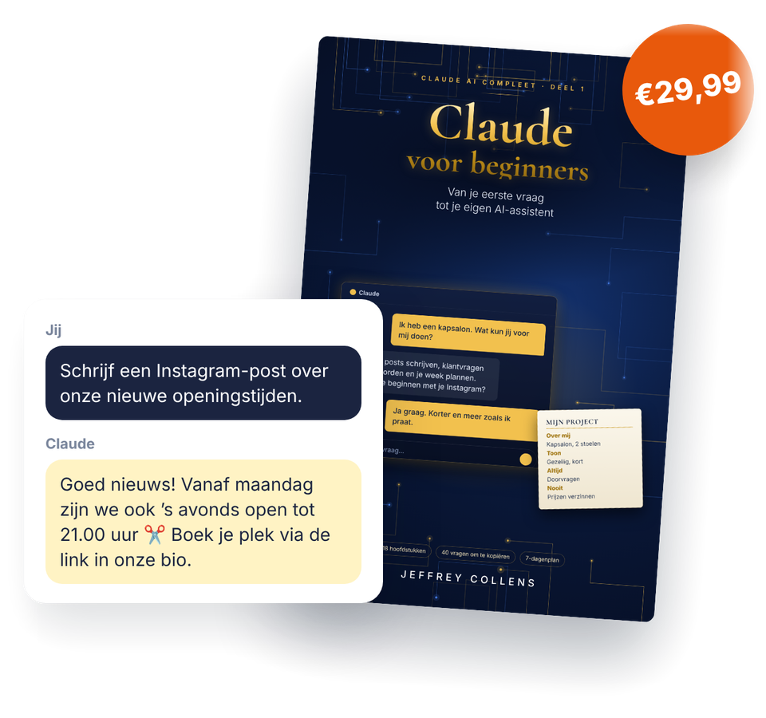
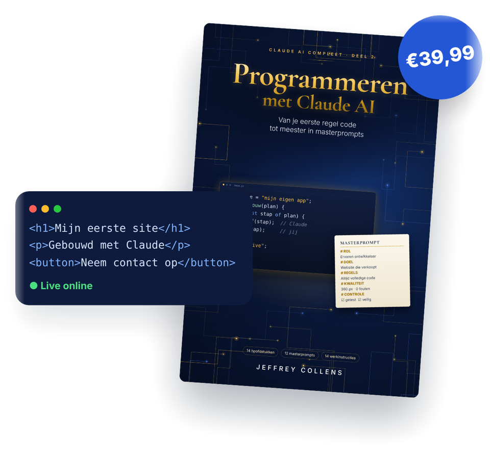
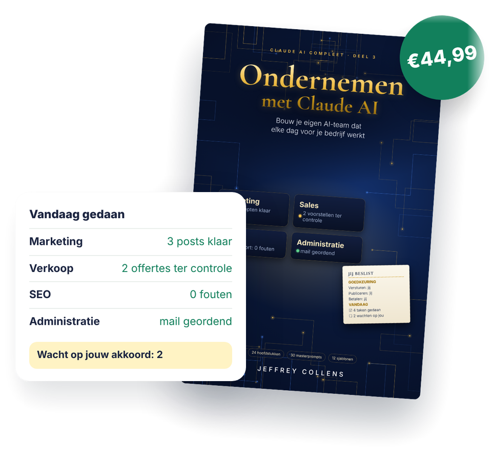

Leer het jezelf: boeken over Claude AI
Praktische boeken in gewoon Nederlands, geschreven vanuit de dagelijkse praktijk van Collens Group. Elk deel is los verkrijgbaar en direct te downloaden.
De boeken: welk deel past bij jou?
Drie boeken, drie stappen. Begin waar jij nu staat en koop alleen wat je nodig hebt. Elk deel staat vol figuren, praktijkvoorbeelden en opdrachten die je direct kunt toepassen.
Deel 1 · Claude voor beginners
Werk slimmer met AI. Vanaf vandaag.
Voor wie net begint. In gewoon Nederlands leer je stap voor stap hoe je Claude inzet in je werk, tot je een assistent hebt die jouw bedrijf kent.
- Goede vragen stellen met één eenvoudige formule
- Een eigen assistent die je bedrijf, prijzen en toon kent
- Mail en agenda veilig koppelen
- 106 pagina's
- 17 figuren
- 40 vragen om te kopiëren

Deel 2 · Programmeren met Claude AI
Bouw je eigen website of app. Ook zonder ervaring.
Voor wie zelf wil bouwen. Je leert de basis van HTML, CSS en JavaScript en laat Claude het zware werk doen, terwijl jij begrijpt wat er gebeurt.
- Je eigen website, stap voor stap gebouwd
- Een eigen app maken met Claude als partner
- Masterprompts waarmee AI voorspelbaar werkt
- 92 pagina's
- 12 masterprompts
- 14 werkinstructies

Deel 3 · Ondernemen met Claude AI
Laat AI het werk doen. Jij houdt de regie.
Voor ondernemers die Claude al gebruiken. Bouw een klein AI-team dat marketing, klanten, vindbaarheid en administratie voorbereidt, terwijl jij goedkeurt en beslist.
- Een AI-team met geheugen, grenzen en dagrapporten
- Marketing, verkoop en SEO laten voorbereiden
- Heldere regels: wat AI zelf mag en wat nooit
- 139 pagina's
- 30 masterprompts
- 20 werkinstructies
- 12 sjablonen

Waarom deze reeks?
Alles wat in deze boeken staat, gebruiken we zelf: voor onze eigen website, onze apps en het dagelijkse werk van ons bedrijf. Ook wat misging staat erin, met de regels die het voortaan voorkomen. De boeken bouwen op elkaar voort: deel 1 leert je AI gebruiken, deel 2 leert je ermee bouwen en deel 3 leert je er je bedrijf mee runnen.
Hoe koop je een boek?
Je koopt de boeken via onze webshop op Gumroad, een bekend platform voor digitale producten. Na het afrekenen download je het boek meteen. In de webshop vind je ook printbare producten, zoals planners en spellen voor het hele gezin.
Veelgestelde vragen
Moet ik de boeken op volgorde lezen?
Nee, elk boek is los te lezen en je koopt alleen het deel dat je nodig hebt. Ben je nieuw met AI, begin dan bij deel 1: daar leer je goede vragen stellen en een eigen assistent inrichten. Wil je zelf websites, apps of kleine programma's laten bouwen, dan is deel 2 de volgende stap; je hoeft daarvoor niet te kunnen programmeren. Deel 3 is voor ondernemers die Claude al gebruiken en werk structureel uit handen willen geven, met 30 masterprompts, 20 werkinstructies en 12 sjablonen.
Hoe betaal ik en hoe krijg ik het boek?
Je koopt elk boek apart via onze webshop op Gumroad, een internationaal platform voor digitale producten. Je betaalt daar veilig, bijvoorbeeld met je creditcard of PayPal, en je hoeft geen account aan te maken. Direct na het afrekenen download je het boek. Je krijgt ook een mail met de downloadlink en je betaalbewijs, zodat je het later opnieuw kunt downloaden.
Mag ik de masterprompts en sjablonen gebruiken?
Ja. Daar zijn ze voor gemaakt. Je mag de masterprompts, werkinstructies en sjablonen kopiëren, aanpassen aan je eigen bedrijf en gebruiken voor je eigen klanten en projecten, ook commercieel. Wat niet mag: het boek of de bestanden zelf doorsturen, delen in een groep of doorverkopen. Elk exemplaar is een persoonlijke licentie. Werk je met een team, dan koopt ieder teamlid een eigen exemplaar.
In welk formaat krijg ik de boeken?
Elk deel krijg je als PDF én als EPUB, zonder extra kosten. De PDF heeft de volledige opmaak met figuren en grafieken en leest prettig op een computer, tablet of telefoon. De EPUB past zich aan je scherm aan en is bedoeld voor e-readers zoals Kobo, of voor apps als Apple Boeken. Na het afrekenen download je de bestanden direct. Je krijgt ook een mail met de downloadlink, zodat je ze later opnieuw kunt downloaden. Er is geen gedrukte versie.
Heb ik een betaald Claude-abonnement nodig?
Voor deel 1 kun je beginnen met de gratis versie van Claude. Sommige onderdelen, zoals koppelingen met je mail en agenda of geplande taken, vragen om een betaald abonnement. Voor deel 2 en deel 3 werk je het prettigst met een betaald abonnement, omdat je daar langere opdrachten en projecten laat uitvoeren. In elk boek staat per onderdeel wat je nodig hebt, zodat je niet voor niets betaalt.
Zijn de boeken van Anthropic?
Nee. De boeken zijn geschreven door Jeffrey Collens, oprichter van Collens Group, en zijn niet verbonden aan Anthropic, het bedrijf dat Claude maakt. Ze zijn gebaseerd op wat hij dagelijks met Claude doet in zijn eigen bedrijf. Daardoor lees je hoe het in de praktijk werkt, inclusief wat misging, en niet alleen wat de handleiding belooft. Claude verandert snel; schermen en namen van knoppen kunnen dus afwijken van wat je in het boek ziet.
Zie ook: Claude voor beginners · Over ons · AI en automatisering